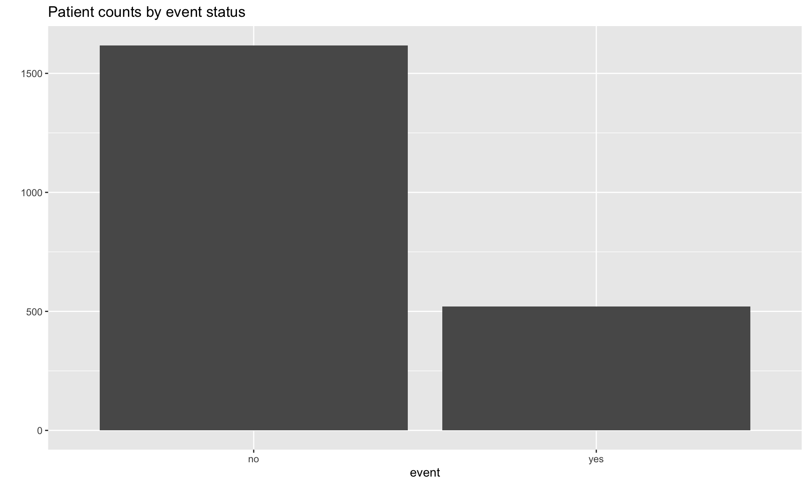
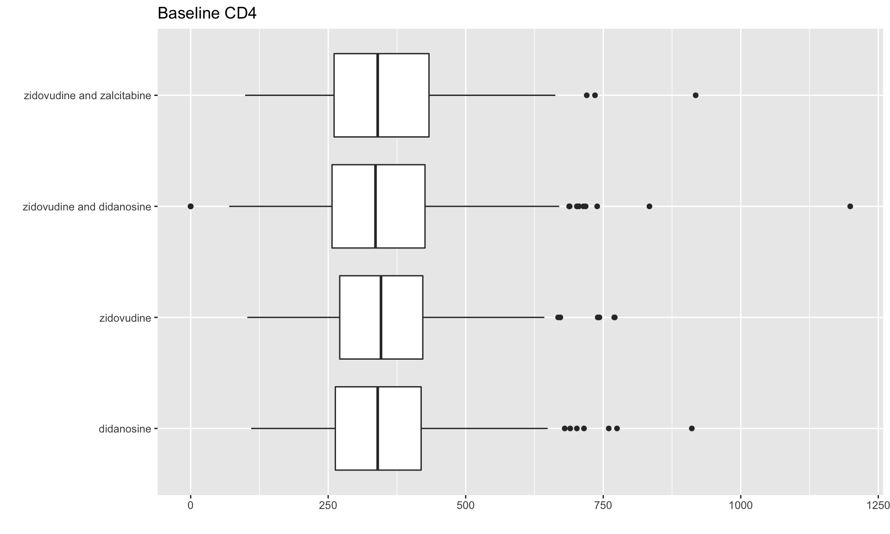
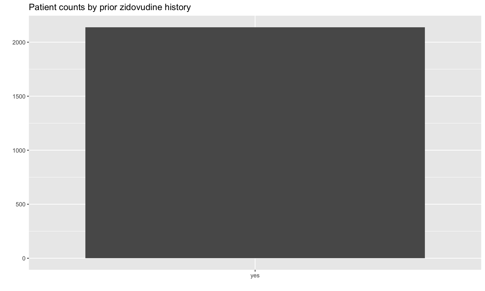
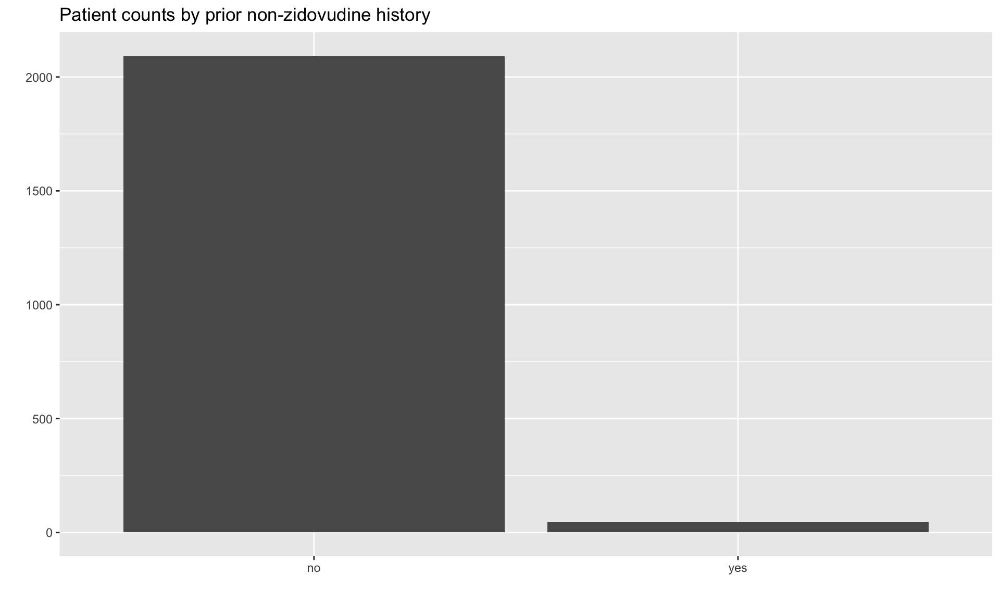
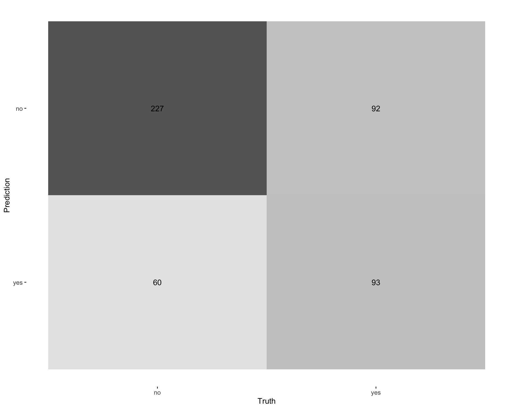
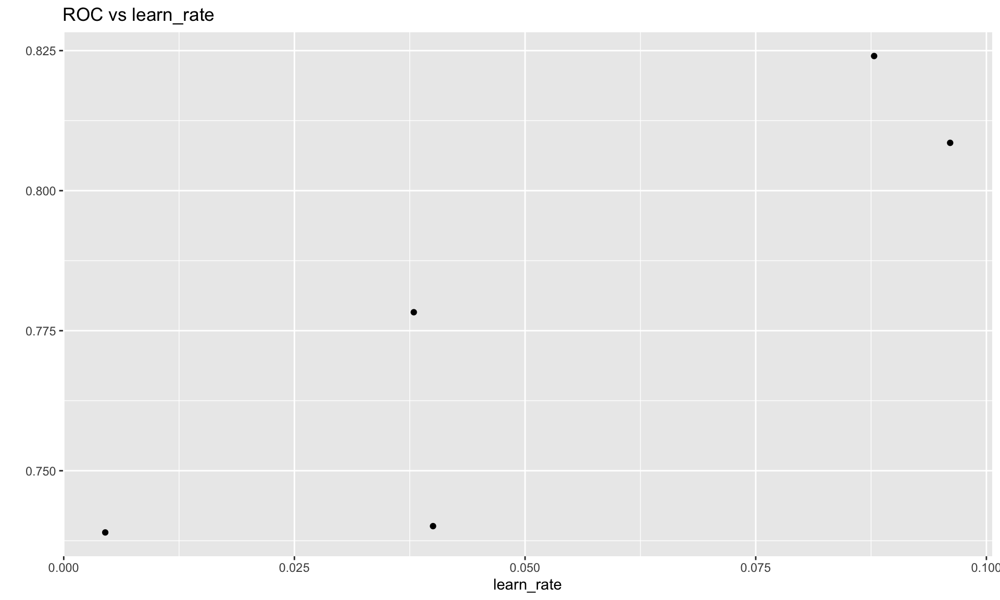
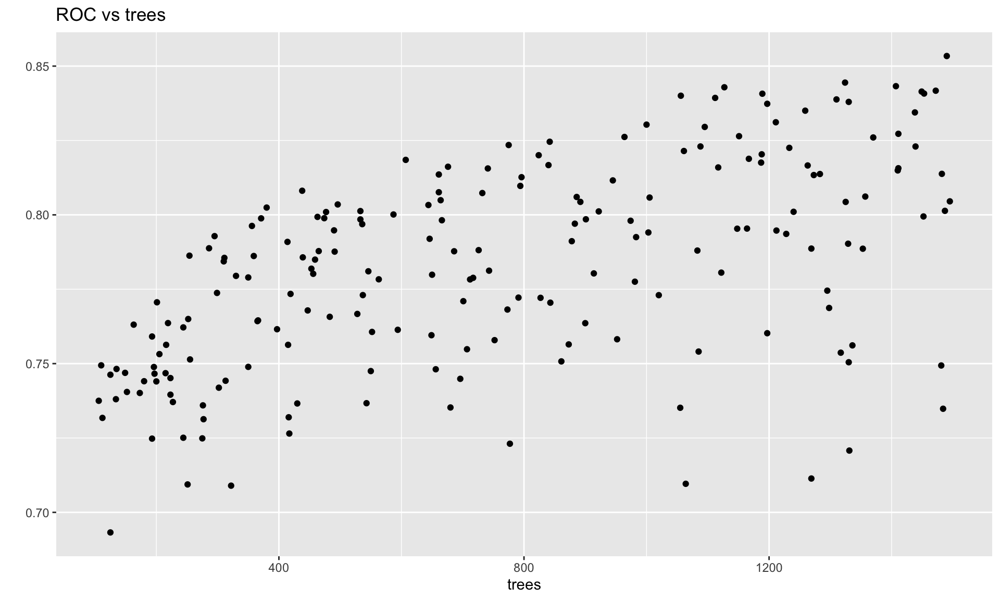
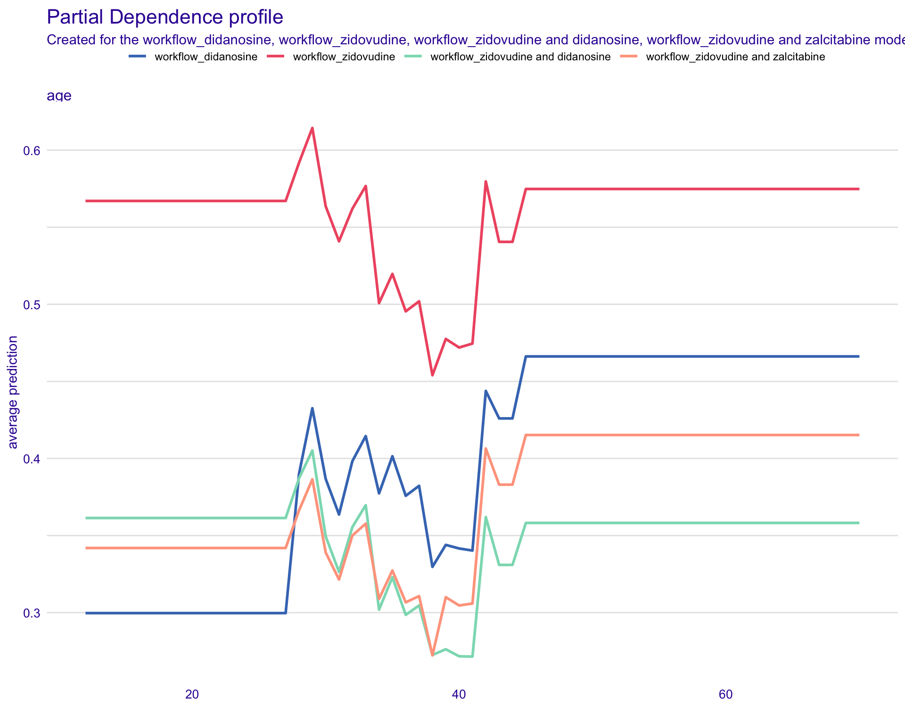

```{r load_pkg}
#| code-fold: false
# Load the packages
suppressPackageStartupMessages(library(speff2trial))
suppressPackageStartupMessages(library(dplyr))
suppressPackageStartupMessages(library(ggplot2))
suppressPackageStartupMessages(library(testthat))
suppressPackageStartupMessages(library(tidymodels))
suppressPackageStartupMessages(library(yardstick))
suppressPackageStartupMessages(library(DT))
suppressPackageStartupMessages(library(pROC))
suppressPackageStartupMessages(library(recipes))
suppressPackageStartupMessages(library(themis))
suppressPackageStartupMessages(library(DALEXtra))
```Machine Learning: Principles & Best Practices
Sydeaka Watson
10 ML best practices
Define modeling objectives
Exploratory data analysis
Feature engineering
Variable selection
Split data into training / testing sets
Train / validate the model
Create visual summaries
Explain the model predictions
Deploy the model
Create a ML workflow
1. Define modeling objectives
1. Define modeling objectives
What do we want the model to do?
- Classification? Regression? Clustering?
What is the outcome / target variable?
Identify the relevant data sources
Select appropriate ML algorithm(s) that align with the modeling objective
1. Example: Clinical Trial ACTG 175
ACTG 175 was a randomized, double-blind, placebo-controlled trial that included HIV-1–infected subjects with CD4 cell counts 200-500 per cubic mm
Treatments
- Monotherapy: (1) zidovudine alone or (2) didanosine alone
- Combination therapy: (3) zidovudine + didanosine or (4) zidovudine + zalcitabine
Primary study end point: (1) >50% decline in CD4 cell count, (2) progression to AIDS, or (3) death.
1. Example: Modeling Plan
Objective: Given baseline characteristics, predict whether patient will experience the primary study endpoint within the observation period
Outcome: Binary indicator of whether patient had >50% CD4+ increase, progressed to AIDS, or death
Data source: Clinical data – baseline predictors, treatment assignment, study outcomes
Candidate algorithms
- Supervised learning / binary classification: Random forest, XGBoost, & Logistic regression
2. Exploratory data analysis
2. Exploratory data analysis
Data quality
Missing data summary / investigation
Determine if we need to exclude any data points or variables
Determine if we need to transform any variables
Examine relationships between candidate predictors and outcomes
2. Example: Environment setup
```{r load_helpers}
#| code-fold: false
# Helper function: Pretty data table
# Table fmt ref: https://stackoverflow.com/questions/44368572/dt-showing-more-rows-in-dt
pretty_dt <- function(tbl, num_digits = 3, num_rows=20) {
dt <- tbl %>%
head(num_rows) %>%
datatable(
fillContainer = FALSE,
options = list(pageLength = 5,
autoWidth = TRUE,
dom = 'tip', # table only
scrollX = TRUE,
scrollY = TRUE,
initComplete = JS(
"function(settings, json) {",
"$(this.api().table().header()).css({'color': 'white'});",
"}")
)
)
# Round float columns (numeric but not integer)
cols_numeric <- colnames(tbl)[sapply(tbl, is.numeric)]
cols_integer <- colnames(tbl)[sapply(tbl, is.integer)]
cols_float <- cols_numeric[!(cols_numeric %in% cols_integer)]
if (length(cols_float) > 0) {
dt <- dt %>% formatRound(cols_float, num_digits)
}
return(dt)
}
```Show the code
pidnum age wtkg hemo
Min. : 10056 Min. :12.00 Min. : 31.00 Min. :0.00000
1st Qu.: 81446 1st Qu.:29.00 1st Qu.: 66.68 1st Qu.:0.00000
Median :190566 Median :34.00 Median : 74.39 Median :0.00000
Mean :248778 Mean :35.25 Mean : 75.13 Mean :0.08415
3rd Qu.:280277 3rd Qu.:40.00 3rd Qu.: 82.56 3rd Qu.:0.00000
Max. :990077 Max. :70.00 Max. :159.94 Max. :1.00000
homo drugs karnof oprior
Min. :0.0000 Min. :0.0000 Min. : 70.00 Min. :0.00000
1st Qu.:0.0000 1st Qu.:0.0000 1st Qu.: 90.00 1st Qu.:0.00000
Median :1.0000 Median :0.0000 Median :100.00 Median :0.00000
Mean :0.6611 Mean :0.1314 Mean : 95.45 Mean :0.02197
3rd Qu.:1.0000 3rd Qu.:0.0000 3rd Qu.:100.00 3rd Qu.:0.00000
Max. :1.0000 Max. :1.0000 Max. :100.00 Max. :1.00000
z30 zprior preanti race gender
Min. :0.0000 Min. :1 Min. : 0.0 Min. :0.0000 Min. :0.000
1st Qu.:0.0000 1st Qu.:1 1st Qu.: 0.0 1st Qu.:0.0000 1st Qu.:1.000
Median :1.0000 Median :1 Median : 142.0 Median :0.0000 Median :1.000
Mean :0.5503 Mean :1 Mean : 379.2 Mean :0.2885 Mean :0.828
3rd Qu.:1.0000 3rd Qu.:1 3rd Qu.: 739.5 3rd Qu.:1.0000 3rd Qu.:1.000
Max. :1.0000 Max. :1 Max. :2851.0 Max. :1.0000 Max. :1.000
str2 strat symptom treat
Min. :0.0000 Min. :1.00 Min. :0.000 Min. :0.0000
1st Qu.:0.0000 1st Qu.:1.00 1st Qu.:0.000 1st Qu.:1.0000
Median :1.0000 Median :2.00 Median :0.000 Median :1.0000
Mean :0.5858 Mean :1.98 Mean :0.173 Mean :0.7513
3rd Qu.:1.0000 3rd Qu.:3.00 3rd Qu.:0.000 3rd Qu.:1.0000
Max. :1.0000 Max. :3.00 Max. :1.000 Max. :1.0000
offtrt cd40 cd420 cd496
Min. :0.0000 Min. : 0.0 Min. : 49.0 Min. : 0.0
1st Qu.:0.0000 1st Qu.: 263.5 1st Qu.: 269.0 1st Qu.: 209.2
Median :0.0000 Median : 340.0 Median : 353.0 Median : 321.0
Mean :0.3628 Mean : 350.5 Mean : 371.3 Mean : 328.6
3rd Qu.:1.0000 3rd Qu.: 423.0 3rd Qu.: 460.0 3rd Qu.: 440.0
Max. :1.0000 Max. :1199.0 Max. :1119.0 Max. :1190.0
NA's :797
r cd80 cd820 cens
Min. :0.0000 Min. : 40.0 Min. : 124.0 Min. :0.0000
1st Qu.:0.0000 1st Qu.: 654.0 1st Qu.: 631.5 1st Qu.:0.0000
Median :1.0000 Median : 893.0 Median : 865.0 Median :0.0000
Mean :0.6274 Mean : 986.6 Mean : 935.4 Mean :0.2436
3rd Qu.:1.0000 3rd Qu.:1207.0 3rd Qu.:1146.5 3rd Qu.:0.0000
Max. :1.0000 Max. :5011.0 Max. :6035.0 Max. :1.0000
days arms
Min. : 14.0 Min. :0.000
1st Qu.: 727.0 1st Qu.:1.000
Median : 997.0 Median :2.000
Mean : 879.1 Mean :1.521
3rd Qu.:1091.0 3rd Qu.:3.000
Max. :1231.0 Max. :3.000
2. Example: Data transformations
Show the code
dat_clean <- dat_raw %>%
mutate(treatment_arm = case_when(
arms == 0 ~ 'zidovudine',
arms == 1 ~ 'zidovudine and didanosine',
arms == 2 ~ 'zidovudine and zalcitabine',
arms == 3 ~ 'didanosine',
TRUE ~ NA_character_
)) %>%
mutate(
hemo = case_when(
hemo == 0 ~ 'no',
hemo == 1 ~ 'yes',
TRUE ~ NA_character_
),
lgbtq = case_when(
homo == 0 ~ 'no',
homo == 1 ~ 'yes',
TRUE ~ NA_character_
),
hist_intra_drug_use = case_when(
drugs == 0 ~ 'no',
drugs == 1 ~ 'yes',
TRUE ~ NA_character_
),
prior_nz_art = case_when(
oprior == 0 ~ 'no',
oprior == 1 ~ 'yes',
TRUE ~ NA_character_
),
prior_z_30days = case_when(
z30 == 0 ~ 'no',
z30 == 1 ~ 'yes',
TRUE ~ NA_character_
),
prior_z = case_when(
zprior == 0 ~ 'no',
zprior == 1 ~ 'yes',
TRUE ~ NA_character_
),
days_prior_art = preanti,
race = case_when(
race == 0 ~ 'white',
race == 1 ~ 'non-white',
TRUE ~ NA_character_
),
gender = case_when(
gender == 0 ~ 'female',
gender == 1 ~ 'male',
TRUE ~ NA_character_
),
prior_art = case_when(
str2 == 0 ~ 'naive',
str2 == 1 ~ 'experienced',
TRUE ~ NA_character_
),
strat_hist_art = case_when(
strat == 1 ~ 'antiretroviral naive',
strat == 2 ~ '> 1 but <= 52 weeks of prior antiretroviral therapy',
strat == 3 ~ '> 52 weeks',
TRUE ~ NA_character_
),
symptom = case_when(
symptom == 0 ~ 'asymptomatic',
symptom == 1 ~ 'symptomatic',
TRUE ~ NA_character_
),
prior_z = case_when(
zprior == 0 ~ 'no',
zprior == 1 ~ 'yes',
TRUE ~ NA_character_
),
prior_z = case_when(
zprior == 0 ~ 'no',
zprior == 1 ~ 'yes',
TRUE ~ NA_character_
),
zidovudine_indicator = treat,
surv_days = days,
surv_event = cens,
event = ifelse(surv_event == 0, 'no', 'yes') %>% factor,
baseline_cd4 = cd40,
baseline_cd8 = cd80
) %>%
select(
# identifier
pidnum,
# treatment assignment
zidovudine_indicator, treatment_arm, offtrt,
# baseline predictors
age, wtkg, hemo, lgbtq, hist_intra_drug_use, karnof, prior_nz_art, prior_z_30days, prior_z, days_prior_art, race, gender, prior_art, strat_hist_art, symptom, baseline_cd4, baseline_cd8,
# survival outcome
event, surv_event, surv_days,
# other outcomes
cd420, cd496, r, cd820
) %>%
mutate_if(is.character, factor)
dat_clean %>% summary pidnum zidovudine_indicator treatment_arm
Min. : 10056 Min. :0.0000 didanosine :561
1st Qu.: 81446 1st Qu.:1.0000 zidovudine :532
Median :190566 Median :1.0000 zidovudine and didanosine :522
Mean :248778 Mean :0.7513 zidovudine and zalcitabine:524
3rd Qu.:280277 3rd Qu.:1.0000
Max. :990077 Max. :1.0000
offtrt age wtkg hemo lgbtq
Min. :0.0000 Min. :12.00 Min. : 31.00 no :1959 no : 725
1st Qu.:0.0000 1st Qu.:29.00 1st Qu.: 66.68 yes: 180 yes:1414
Median :0.0000 Median :34.00 Median : 74.39
Mean :0.3628 Mean :35.25 Mean : 75.13
3rd Qu.:1.0000 3rd Qu.:40.00 3rd Qu.: 82.56
Max. :1.0000 Max. :70.00 Max. :159.94
hist_intra_drug_use karnof prior_nz_art prior_z_30days prior_z
no :1858 Min. : 70.00 no :2092 no : 962 yes:2139
yes: 281 1st Qu.: 90.00 yes: 47 yes:1177
Median :100.00
Mean : 95.45
3rd Qu.:100.00
Max. :100.00
days_prior_art race gender prior_art
Min. : 0.0 non-white: 617 female: 368 experienced:1253
1st Qu.: 0.0 white :1522 male :1771 naive : 886
Median : 142.0
Mean : 379.2
3rd Qu.: 739.5
Max. :2851.0
strat_hist_art symptom
> 1 but <= 52 weeks of prior antiretroviral therapy:410 asymptomatic:1769
> 52 weeks :843 symptomatic : 370
antiretroviral naive :886
baseline_cd4 baseline_cd8 event surv_event surv_days
Min. : 0.0 Min. : 40.0 no :1618 Min. :0.0000 Min. : 14.0
1st Qu.: 263.5 1st Qu.: 654.0 yes: 521 1st Qu.:0.0000 1st Qu.: 727.0
Median : 340.0 Median : 893.0 Median :0.0000 Median : 997.0
Mean : 350.5 Mean : 986.6 Mean :0.2436 Mean : 879.1
3rd Qu.: 423.0 3rd Qu.:1207.0 3rd Qu.:0.0000 3rd Qu.:1091.0
Max. :1199.0 Max. :5011.0 Max. :1.0000 Max. :1231.0
cd420 cd496 r cd820
Min. : 49.0 Min. : 0.0 Min. :0.0000 Min. : 124.0
1st Qu.: 269.0 1st Qu.: 209.2 1st Qu.:0.0000 1st Qu.: 631.5
Median : 353.0 Median : 321.0 Median :1.0000 Median : 865.0
Mean : 371.3 Mean : 328.6 Mean :0.6274 Mean : 935.4
3rd Qu.: 460.0 3rd Qu.: 440.0 3rd Qu.:1.0000 3rd Qu.:1146.5
Max. :1119.0 Max. :1190.0 Max. :1.0000 Max. :6035.0
NA's :797 2. Example: Data preview
2. Example: Data visualizations
Show the code
# Specify variable types
var_outcomes <- c('event', 'surv_event', 'surv_days', 'cd420', 'cd496', 'r', 'cd820')
excluded_cols <- c('pidnum', 'zidovudine_indicator', 'offtrt')
classes <- sapply(dat_clean, class)
vars_factor <- classes[classes == 'factor'] %>%
names %>%
.[!(. %in% c('progression', 'event'))]
vars_cont <- classes[(classes %in% c('integer', 'numeric'))] %>%
names %>%
.[!(. %in% c(var_outcomes, excluded_cols))]
# Bar plot of event counts
dat_clean %>%
count(event) %>%
ggplot(aes(x = event, y = n)) +
geom_bar(stat = 'identity') +
ylab('') + ggtitle('Patient counts by event status')
# Boxplot of baseline CD4 levels across treatment arms
dat_clean %>%
ggplot(aes(x = treatment_arm, y = baseline_cd4)) +
geom_boxplot() +
coord_flip() +
xlab('') + ylab('') + ggtitle('Baseline CD4')

Show the code
# Bar plot of prior_z counts
dat_clean %>%
count(prior_z) %>%
ggplot(aes(x = prior_z, y = n)) +
geom_bar(stat = 'identity') +
xlab('') + ylab('') + ggtitle('Patient counts by prior zidovudine history')
# Bar plot of prior_nz_art counts
dat_clean %>%
count(prior_nz_art) %>%
ggplot(aes(x = prior_nz_art, y = n)) +
geom_bar(stat = 'identity') +
xlab('') + ylab('') + ggtitle('Patient counts by prior non-zidovudine history')

3. Feature engineering
3. Feature engineering
Create new features that extract additional insight from existing features
For example, we could split timestamp “2022-09-23 11:37:48 CDT” into:
year = 2022
quarter = 3
month = 9
day_of_month = 23
day_of_week = ‘Friday’
hour_24 = 11
minutes = 37
seconds = 48
time_zone = ‘CDT’
3. Example: Individual drugs
Show the code
dat_clean <- dat_clean %>%
mutate(
ind_didanosine = ifelse(grepl(pattern='didanosine', x=treatment_arm), 1L, 0L),
ind_zidovudine = ifelse(grepl(pattern='zidovudine', x=treatment_arm), 1L, 0L),
ind_zalcitabine = ifelse(grepl(pattern='zalcitabine', x=treatment_arm), 1L, 0L)
)
dat_clean %>%
distinct(treatment_arm, ind_didanosine, ind_zidovudine, ind_zalcitabine) %>%
pretty_dt4. Variable selection
4. Variable selection
Which variables do we want to include in the analysis?
Which should be excluded?
Identifier fields, redundant variables, zero-variance variables, etc.
Keep all variables and let the algorithm figure it out? Or feed it specific variables?
Variable reduction - principal components
Could also choose n top variables from preliminary model fit
4. Example: Keeping these variables
Treatment arm assignments (factor + binary indicators)
Baseline characteristics
Age, weight, race, gender, sexual orientation, etc.
Treatment history (including stratification variable)
CD4 and CD8 counts
Symptomatic vs asymptomatic?
Karnofsky score
4. Example: Excluding these variables
pidnum: patient identifier shouldn’t be used as a predictor
offtrt: we wouldn’t know this at baseline (whether the patient went off treatment)
prior_z: all patients have prior zidovudine treatment (i.e., all patients have the same value for this variable), so there’s no value add
prior_nz_art: Very little variability in this variable (2092 no vs 47 yes)
CD4 and CD8 measurements at later time points: we wouldn’t know these at baseline
4. Example: Analysis subset
Show the code
var_predictors <- c(
# treatment assignment
'treatment_arm',
'ind_didanosine', 'ind_zidovudine', 'ind_zalcitabine',
# baseline predictors
'age', 'wtkg', 'hemo', 'lgbtq', 'hist_intra_drug_use', 'karnof', 'prior_z_30days',
'days_prior_art', 'race', 'gender', 'prior_art', 'strat_hist_art', 'symptom', 'baseline_cd4', 'baseline_cd8')
var_outcomes <- c('event', 'surv_event', 'surv_days', 'cd420', 'cd496', 'r', 'cd820')
vars_all <- colnames(dat_clean)
vars_to_keep <- c(var_predictors, var_outcomes)
vars_excluded <- vars_all[!(vars_all %in% vars_to_keep)]
dat_analysis <- dat_clean %>% select_at(vars_to_keep)
dat_analysis %>% summary treatment_arm ind_didanosine ind_zidovudine
didanosine :561 Min. :0.0000 Min. :0.0000
zidovudine :532 1st Qu.:0.0000 1st Qu.:0.0000
zidovudine and didanosine :522 Median :1.0000 Median :1.0000
zidovudine and zalcitabine:524 Mean :0.5063 Mean :0.7377
3rd Qu.:1.0000 3rd Qu.:1.0000
Max. :1.0000 Max. :1.0000
ind_zalcitabine age wtkg hemo lgbtq
Min. :0.000 Min. :12.00 Min. : 31.00 no :1959 no : 725
1st Qu.:0.000 1st Qu.:29.00 1st Qu.: 66.68 yes: 180 yes:1414
Median :0.000 Median :34.00 Median : 74.39
Mean :0.245 Mean :35.25 Mean : 75.13
3rd Qu.:0.000 3rd Qu.:40.00 3rd Qu.: 82.56
Max. :1.000 Max. :70.00 Max. :159.94
hist_intra_drug_use karnof prior_z_30days days_prior_art
no :1858 Min. : 70.00 no : 962 Min. : 0.0
yes: 281 1st Qu.: 90.00 yes:1177 1st Qu.: 0.0
Median :100.00 Median : 142.0
Mean : 95.45 Mean : 379.2
3rd Qu.:100.00 3rd Qu.: 739.5
Max. :100.00 Max. :2851.0
race gender prior_art
non-white: 617 female: 368 experienced:1253
white :1522 male :1771 naive : 886
strat_hist_art symptom
> 1 but <= 52 weeks of prior antiretroviral therapy:410 asymptomatic:1769
> 52 weeks :843 symptomatic : 370
antiretroviral naive :886
baseline_cd4 baseline_cd8 event surv_event surv_days
Min. : 0.0 Min. : 40.0 no :1618 Min. :0.0000 Min. : 14.0
1st Qu.: 263.5 1st Qu.: 654.0 yes: 521 1st Qu.:0.0000 1st Qu.: 727.0
Median : 340.0 Median : 893.0 Median :0.0000 Median : 997.0
Mean : 350.5 Mean : 986.6 Mean :0.2436 Mean : 879.1
3rd Qu.: 423.0 3rd Qu.:1207.0 3rd Qu.:0.0000 3rd Qu.:1091.0
Max. :1199.0 Max. :5011.0 Max. :1.0000 Max. :1231.0
cd420 cd496 r cd820
Min. : 49.0 Min. : 0.0 Min. :0.0000 Min. : 124.0
1st Qu.: 269.0 1st Qu.: 209.2 1st Qu.:0.0000 1st Qu.: 631.5
Median : 353.0 Median : 321.0 Median :1.0000 Median : 865.0
Mean : 371.3 Mean : 328.6 Mean :0.6274 Mean : 935.4
3rd Qu.: 460.0 3rd Qu.: 440.0 3rd Qu.:1.0000 3rd Qu.:1146.5
Max. :1119.0 Max. :1190.0 Max. :1.0000 Max. :6035.0
NA's :797 5. Split data into training / testing
5. Split data into training / testing
Fit the model on the training set(s)
Get intermediate assessment of model performance on validation set(s)
Use k-fold cross-validation to train/validate on multiple data splits
Get final assessment of model performance on testing set
5. Example: Train /validation/test split
Initial data split
85 % training / validation + 15% test
Show the code
<Training/Testing/Total>
<1817/322/2139>Show the code
dat_train_and_val <- training(dat_split)
dat_test <- testing(dat_split)
df_dimensions <- list(
full_dataset = dat_analysis %>% dim,
train_val_dataset = dat_train_and_val %>% dim,
test_dataset = dat_test %>% dim
)
df_dim_message <- sapply(names(df_dimensions), function(df_name) {
glue::glue("`{df_name}` contains {df_dimensions[[df_name]][1]} rows and {df_dimensions[[df_name]][2]} columns.")
}) %>%
paste(., collapse='\n')
cat(df_dim_message)`full_dataset` contains 2139 rows and 26 columns.
`train_val_dataset` contains 1817 rows and 26 columns.
`test_dataset` contains 322 rows and 26 columns.Correct class imbalance issue
There are 3x as many ‘no’ events as there are ‘yes’ events.
This can negatively impact model performance.
Correct class imbalance issue
We can use the
step_upsamplefunction to over-sample the minority class (i.e., the ‘yes’ class).This creates replicate rows of the ‘yes’ records that can artificially make the proportions more balanced
We would only do this for the training data
Show the code
# Model formula
model_formula <- as.formula(paste('event ~ ', paste(var_predictors, collapse = ' + ')))
# Recipe for upsampling the minority class
upsample_rec <-
recipe(model_formula, data = dat_train_and_val) %>%
step_upsample(event, over_ratio = 0.7) %>%
prep()
# Apply the upsampling
dat_train_and_val <- upsample_rec %>%
bake(new_data = NULL)
# Show new distrubution of event outcome
dat_train_and_val %>% count(event)# A tibble: 2 × 2
event n
<fct> <int>
1 no 1385
2 yes 969Validation split
80% training + 20% validation
Show the code
set.seed(321)
dat_val_split <- validation_split(dat_train_and_val, prop = 0.80, strata = strat_hist_art)
dat_train <- analysis(dat_val_split$splits[[1]])
dat_valid <- assessment(dat_val_split$splits[[1]])
df_dimensions <- list(
dat_train_and_val_dataset = dat_train_and_val %>% dim,
train_dataset = dat_train %>% dim,
valid_dataset = dat_valid %>% dim
)
df_dim_message <- sapply(names(df_dimensions), function(df_name) {
glue::glue("`{df_name}` contains {df_dimensions[[df_name]][1]} rows and {df_dimensions[[df_name]][2]} columns.")
}) %>%
paste(., collapse='\n')
cat(df_dim_message)`dat_train_and_val_dataset` contains 2354 rows and 20 columns.
`train_dataset` contains 1882 rows and 20 columns.
`valid_dataset` contains 472 rows and 20 columns.6. Train the model(s)
6. Train the model(s)
Model = modeling algorithm + model formula + algorithm hyperparameter values
Try different modeling algorithms
Try different hyperparameter values
May need to use parallel processing over multiple cores for faster training
Model validation - evaluate each model on holdout dataset(s)
Good: Train on training set / validate on validation set
Best: Cross-validation on training/validation set
6a. Example: Benchmark model
We will compare ML model performance to this basic logistic regression fit.
Show the code
# Model specification
model_spec_logreg <- logistic_reg(mode = "classification", engine = "glm")
# Model formula
model_formula <- as.formula(paste('event ~ ', paste(var_predictors, collapse = ' + ')))
# Model workflow
logreg_model_wflow <- workflow(model_formula, model_spec_logreg)
# Train the model
model_fit_logreg <- fit(logreg_model_wflow, dat_train)
# Append the predictions to the testing dataframe
dat_valid_w_preds_logreg <- augment(model_fit_logreg, new_data = dat_valid) %>%
mutate(.pred_yes_int = ifelse(.pred_yes > .5, 1, 0))
# Show the augmented validation dataframe (original data + predictions)
dat_valid_w_preds_logreg %>% pretty_dt6a. Example: Benchmark model
Logistic regression model accuracy
6a. Example: Benchmark model
Area under ROC Curve for logistic regression model fit
6a. Example: Benchmark model
Confusion matrix: Logistic regression model struggles to correctly predict events.
6b. Example: Set up parallel backend
Machine learning algorithms are computationally expensive
Parallelizing these computations over multiple cores can significantly reduce training time
Code below shows an example parallel backend setup
6c. Example: RF k-fold CV
Train a Random Forest model using k-fold cross-validation
Same model formula used in the logistic regression (benchmark model)
Using the Random Forest implementation provided in the
rangerpackageSetting specific values for selected hyperparameters (
trees,mtry, andmin_n)
Example: RF k-fold CV
In each step, fit models on (k-1) folds combined and evaluate performance on remaining fold
Fold splits are stratified by patient’s history of anti-retroviral therapy
Saving predictions on holdout folds for later use
Default performance metrics for binary classification: accuracy + AUC
Code
```{r rf_train_w_cv}
#| code-fold: false
# Generate k folds for CV
num_folds <- 5
dat_folds <- vfold_cv(dat_train_and_val, v = num_folds, strata = strat_hist_art)
# Save the assessment set results
ctrl <- control_resamples(save_pred = TRUE)
# Model specification
model_spec_rf <- rand_forest(mode = 'classification', engine = 'ranger',
trees = 300, mtry = 10, min_n = 100)
# Model formula
model_formula <- as.formula(paste('event ~ ', paste(var_predictors, collapse = ' + ')))
# Model workflow
rf_model_wflow <- workflow(model_formula, model_spec_rf)
# k-fold cross validation of the random forest model
fit_cv_res <- fit_resamples(rf_model_wflow, dat_folds, control = ctrl)
```6c. RF k-fold CV
Evaluate model performance
Aggregate performance metrics across folds
- Shows mean, standard error, and n = # folds
6c. RF k-fold CV
Get predictions on the held-out folds
Predicted probability of yes or no
Predicted class = whichever has highest predicted probability
Also includes the true classification column
eventfor comparison purposes
6d. Example: Multiple models
Fit Random forest, XGBoost, and Logistic regression models in a single workflow
Can test various model formula and algorithm combinations
```{r multi_model_train_w_cv}
#| code-fold: false
# Generate k folds for CV
num_folds <- 3
dat_folds <- vfold_cv(dat_train_and_val, v = num_folds, strata = strat_hist_art)
# Save the assessment set results
ctrl <- control_resamples(save_pred = TRUE)
# Model specifications
model_spec_rf <- rand_forest(mode = 'classification', engine = 'ranger', trees = 300,
mtry = 10, min_n = 25)
#model_spec_dt <- decision_tree(mode = 'classification', engine = 'rpart', tree_depth = 5,
# min_n = 20)
model_spec_xgb <- boost_tree(mode = 'classification', engine = 'xgboost', trees = 250,
tree_depth = 5, min_n = 30, learn_rate = 0.5)
model_spec_logreg <- logistic_reg(mode = "classification", engine = "glm")
# Model formula
model_formula <- as.formula(paste('event ~ ', paste(var_predictors, collapse = ' + ')))
# Model workflows
rf_model_wflow <- workflow(model_formula, model_spec_rf)
#dt_model_wflow <- workflow(model_formula, model_spec_dt)
xgb_model_wflow <- workflow(model_formula, model_spec_xgb)
logreg_model_wflow <- workflow(model_formula, model_spec_logreg)
wf_set <- workflow_set(list(model_formula),
list(model_spec_logreg, model_spec_rf, model_spec_xgb))
wf_set_fit <- wf_set %>%
workflow_map("fit_resamples", resamples = dat_folds)
```6d. Example: Multiple models
Leaderboard shows model performance rankings across modeling scenarios
6e. Example — Param tuning w/ CV
Tune hyperparameters
Fit the same algorithm multiple times using different parameter values
Choose the parameter combination that optimizes model performance
Can choose grid search approach - Latin Hypercube, Max entropy, Regular, etc
Can choose parameter value ranges or have them automatically selected
Code
```{r xgb_param_tune_w_cv}
#| code-fold: false
set.seed(9265)
# Generate k folds for CV
num_folds <- 5
dat_folds <- vfold_cv(dat_train_and_val, v = num_folds, strata = strat_hist_art)
# Model specifications
# Some parameters are specified, while others are marked for tuning
model_spec_xgb_tune <- boost_tree(mode = 'classification', engine = 'xgboost', trees = tune(),
tree_depth = tune(), min_n = 54, learn_rate = tune(),
mtry = tune())
# Save the assessment set results
ctrl <- control_grid(save_pred = TRUE, allow_par=TRUE, parallel_over = "everything",
verbose=TRUE, event_level='second')
# Model formula
model_formula <- as.formula(paste('event ~ ', paste(var_predictors, collapse = ' + ')))
# Model workflow
xgb_model_wflow_tune <- workflow(model_formula, model_spec_xgb_tune)
xgb_param <-
xgb_model_wflow_tune %>%
extract_parameter_set_dials() %>%
update(
trees = trees(c(100, 1500)),
learn_rate = learn_rate(c(.00005, .1), trans= NULL),
tree_depth = tree_depth(c(4, 20)),
mtry = mtry(c(3, 20))
)
# Tune the hyperparameters using k-fold cross validation
set.seed(9)
tm <- system.time({
xgb_res <-
xgb_model_wflow_tune %>%
tune_grid(resamples = dat_folds,
grid = xgb_param %>% grid_max_entropy(size = 100),
control = ctrl)
})
# How long did it take to run?
print(tm)
``` user system elapsed
3.031 0.767 96.191 6e. Example — Param tuning w/ CV
Summarize model performance metrics across folds
6e. Example — Param tuning w/ CV
Show the top XGBoost model
6e. Example — Stop the cluster
Shut down the parallel backend
7. Create visual summaries
7. Create visual summaries
Visual model summaries can often provide additional insight
Compare model performance across modeling scenarios
Compare predicted values to observed
Regression: scatterplot
Classification: confusion matrix
7. Example: Model performance across tuning scenarios
Show the code
xgb_tune_metrics <- xgb_res %>%
collect_metrics() %>%
mutate(scenario = glue::glue("learn_rate = {signif(learn_rate, 3)}; trees = {trees}; tree_depth = {tree_depth}"))
plot_tune_metrics_xgb <- xgb_tune_metrics %>%
#filter(.metric == 'roc_auc') %>%
ggplot(aes(x=scenario)) +
geom_point(aes(x=scenario, y=mean)) +
geom_errorbar(aes(ymin=mean-std_err, ymax=mean+std_err), width=.2,
position=position_dodge(0.05)) +
facet_wrap(~.metric) +
coord_flip()
plot_tune_metrics_xgb7. Example: ROC vs param value
Plotting the model performance against the parameter values in the grid can often reveal trends that can help refine the grid for better performance.
For example… <insight>
Plots: Learning rate and num. trees
Show the code


Plots: Tree depth and mtry
7. Example: Confusion matrix
Compare predicted vs observed outcomes in a single CV fold
7. Example: Confusion matrix
Summarize the predicted vs observed outcomes across k folds
Show the code
library(tidyr)
tune_preds <- xgb_res %>%
collect_predictions()
cells_per_resample <- tune_preds %>%
group_by(id) %>%
conf_mat(event, .pred_class) %>%
mutate(tidied = lapply(conf_mat, tidy)) %>%
unnest(tidied)
# Get the totals per resample
counts_per_resample <- tune_preds %>%
group_by(id) %>%
summarize(total = n()) %>%
left_join(cells_per_resample, by = "id") %>%
# Compute the proportions
mutate(prop = value/total) %>%
group_by(name) %>%
# Average
summarize(prop = mean(prop))
# Now reshape these into a matrix
mean_cmat <- matrix(counts_per_resample$prop, byrow = TRUE, ncol = 2)
rownames(mean_cmat) <- levels(tune_preds$event)
colnames(mean_cmat) <- levels(tune_preds$event)
round(mean_cmat, 3) no yes
no 0.488 0.176
yes 0.100 0.2367. Example: Select the best model
Best model is the one that optimizes the performance metric
For example, we could choose the model with highest AUC
Code
Show the code
## XGBoost model that has the best AUC
best_auc <- select_best(xgb_res, metric = "roc_auc")
## Workflow associated with the best AUC
best_xgb_wflow <- xgb_model_wflow_tune %>%
finalize_workflow(best_auc)
## The final model fit
final_model_fit <-
best_xgb_wflow %>%
fit(data = dat_train)
print(final_model_fit)══ Workflow [trained] ══════════════════════════════════════════════════════════
Preprocessor: Formula
Model: boost_tree()
── Preprocessor ────────────────────────────────────────────────────────────────
event ~ treatment_arm + ind_didanosine + ind_zidovudine + ind_zalcitabine +
age + wtkg + hemo + lgbtq + hist_intra_drug_use + karnof +
prior_z_30days + days_prior_art + race + gender + prior_art +
strat_hist_art + symptom + baseline_cd4 + baseline_cd8
── Model ───────────────────────────────────────────────────────────────────────
##### xgb.Booster
raw: 1.2 Mb
call:
xgboost::xgb.train(params = list(eta = 0.0924847716008197, max_depth = 17L,
gamma = 0, colsample_bytree = 1, colsample_bynode = 0.5,
min_child_weight = 54, subsample = 1), data = x$data, nrounds = 1385L,
watchlist = x$watchlist, verbose = 0, nthread = 1, objective = "binary:logistic")
params (as set within xgb.train):
eta = "0.0924847716008197", max_depth = "17", gamma = "0", colsample_bytree = "1", colsample_bynode = "0.5", min_child_weight = "54", subsample = "1", nthread = "1", objective = "binary:logistic", validate_parameters = "TRUE"
xgb.attributes:
niter
callbacks:
cb.evaluation.log()
# of features: 32
niter: 1385
nfeatures : 32
evaluation_log:
iter training_logloss
1 0.6818197
2 0.6731883
---
1384 0.3370586
1385 0.33700318. Explain model predictions
8. Explain model predictions
- Understand the patterns that the model has learned
- What does it understand about the relationship between the outcome and predictors?
- Any new insights?
- Does any learned relationship clash with your intuition?
- Can summarize individual and interactive importance of the predictors
- Can provide global summary of overall relationships vs local explanations of individual predictions
- Will provide more details on Day 3
8. Example: Model explainer
Show the code
Preparation of a new explainer is initiated
-> model label : workflow ( default )
-> data : 1882 rows 20 cols
-> data : tibble converted into a data.frame
-> target variable : 1882 values
-> predict function : yhat.workflow will be used ( default )
-> predicted values : No value for predict function target column. ( default )
-> model_info : package tidymodels , ver. 1.0.0 , task classification ( default )
-> predicted values : numerical, min = 0.007486761 , mean = 0.4165853 , max = 0.9883219
-> residual function : difference between y and yhat ( default )
-> residuals : numerical, min = -0.9161886 , mean = -7.166723e-06 , max = 0.9464752
A new explainer has been created! 8. Example: PDP
- Partial dependence profiles show relationship between predicted probabilities and the values of individual predictors.
PDP grouped by treatment arm
Show the code
# https://ema.drwhy.ai/partialDependenceProfiles.html
plot_pdp <- function(dat, explainer, input_vars, group_var) {
set.seed(86329)
pdp_list <- lapply(input_vars, function(vname) {
var_splits <- list(unique(dat[[vname]]))
names(var_splits) <- vname
model_profile(
xgb_explainer,
variables = vname,
N = NULL,
groups = group_var,
variable_splits = var_splits
)
})
lapply(pdp_list, plot)
}
plot_pdp(dat = dat_train, explainer = xgb_explainer,
input_vars='age', group_var='treatment_arm')[[1]]
plot_pdp(dat = dat_train, explainer=xgb_explainer,
input_vars='karnof', group_var='treatment_arm')[[1]]

9. Deploy the model
9. Deploy the model
Meodel deployment will be discussed in the hands-on session on Day 3.
10. Create a ML workflow
10. Create a ML workflow
A machine learning workflow is a fully-scripted set of tasks that complete all steps in a machine learning pipeline
Tasks might include
data ingestion
data pre-processing
parameter tuning over multiple algorithms
selecting the optimal model
create visual summaries
generate report
etc.
Targets
Can leverage the
targetsframework:Analyzes the dependency relationships among the tasks of a workflow
Skips steps that are already up to date
Runs the necessary computation with optional parallel workers
Abstracts files as R objects
Provides tangible evidence that the results match the underlying code and data.
For details, visit the link to the
targetsmanual provided in the resources section
Closing remarks
Closing remarks
In this introductory lecture, we discussed the 10 best practices of machine learning.
We will continue this discussion on Day 3 (October 12, 2022) for the hands-on workshop. I hope you will join us!
- Details about the workshop will be emailed to you.
I hope you feel empowered to learn more about these apply these approaches in your work at Lilly.
Resources
General resources
2022 ML Workshop
Machine learning algorithms
Model deployment
Lilly resources
HPC documentation
JupyterHub: Link; Documentation
RStudio Server: Link; Documentation
RStudio Connect: Link; Documentation
Analytics WorkBench: Link; Documentation
2022 SDnA Machine Learning Workshop